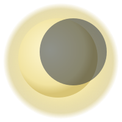
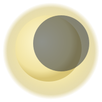
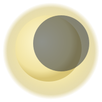
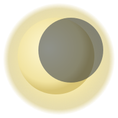

« Embrassez le frisson »
Daphné


 Commencer l'exploration
Commencer l'exploration


 
Commencer l'exploration

Commencer l'exploration


Le défilement parallaxe est une technique de design web où l'arrière-plan se déplace plus lentement que l'avant-plan,
créant une impression de profondeur 3D et une immersion lors de la navigation. Cette astuce s'appuie sur une illusion :
l'œil perçoit les objets proches comme plus grands, tandis que ceux au loin semblent se déplacer plus lentement. Elle est
utilisée depuis longtemps dans l'animation et d'autres médias pour produire une sensation de relief, notamment dans des
classiques comme « Blanche-Neige et les Sept Nains » ou des jeux comme « Super Mario ».
Avec les progrès du CSS et du HTML, l'effet s'est naturellement intégré au design web moderne. En 2007, le développeur
Glutnix a partagé l'un des premiers exemples de parallaxe dans un navigateur, montrant comment exploiter JavaScript et CSS2
pour supporter Internet Explorer 6 et ses contemporains. L'essor de HTML5 et CSS3 en 2011 a réellement attiré l'attention
des designers. Beaucoup y voient une façon simple de démontrer la fluidité du web et de renforcer l'interaction, même si une
étude de l'université Purdue publiée en 2013 rappelle que, si la parallaxe améliore certains aspects de l'expérience
utilisateur, elle ne garantit pas une amélioration globale.
Les designers devraient explorer la parallaxe pour deux raisons principales :
La parallaxe se prête parfaitement à la narration. Un bon design sert à communiquer : lorsque nous concevons un site, nous voulons dialoguer avec les visiteurs et raconter l'histoire d'un produit, d'un service ou d'une marque. Le défilement parallaxe crée une expérience en ligne immersive et permet même d'imaginer une page unique où l'on découvre tout le récit sans changer d'écran.
La parallaxe peut aussi soutenir l'interaction. Réduire le taux de rebond demeure un objectif clé : trop d'utilisateurs qui quittent après une seule page affectent le référencement. Tout ce qui encourage les visiteurs à rester mérite d'être exploré. Une page parallaxe bien conçue propose une expérience dynamique qui incite les gens à passer plus de temps sur le site.
Mieux vaut réserver l'effet à quelques éléments clés qu'à toutes les pages. On peut l'appliquer aux titres, à la bannière ou à la page d'accueil pour en faire un accent qui valorise le design sans le parasiter.
La parallaxe sollicite plusieurs médias et formes CSS pour créer des calques. Des fichiers trop lourds ralentissent le chargement et nuisent à l'expérience : compresser les visuels reste indispensable.
La parallaxe concerne aussi la couleur. Un arrière-plan légèrement désaturé et des couleurs vives au premier plan renforcent la sensation de profondeur.